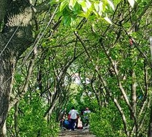
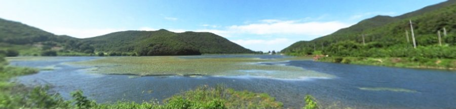
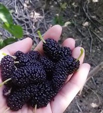

유유농산은

어린 누에는 온돌방에서, 큰 누에는 황토 잠실에서 옛 방식 그대로 길러요.

2003년 농촌진흥청이 청정지역으로 지정한 마을에서 뽕나무를 키워요.

제철에 수확한 오디를 급냉해 1kg씩 포장해 보내 드려요.
제품 소개
제품을 누르면 자세한 설명과 드시는 법을 볼 수 있어요.
제철 오디는 1kg 포장, 6kg 이상 무료배송이에요.
누에 동결건조 · 화력건조도 전화로 문의해 주세요.
사업장 전북 부안군 변산면 유유오디길 4 (지번: 마포리 49-3)
부안 누에타운에서 곰소 방향으로 800미터
체험장 전북 부안군 변산면 마포리 29-24